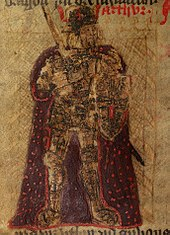

Arthur in Medieval Literature
The familiar literary persona of Arthur began with Geoffrey of Monmouth's pseudo-historical Historia Regum Britanniae (History of the Kings of Britain), written in the 1130s. The textual sources for Arthur are usually divided into those written before Geoffrey's Historia (known as pre-Galfridian texts, from the Latin form of Geoffrey, Galfridus) and those written afterwards, which could not avoid his influence (Galfridian, or post-Galfridian, texts).
Pre-Galfridian Traditions
The earliest literary references to Arthur come from Welsh and Breton sources. There have been few attempts to define the nature and character of Arthur in the pre-Galfridian tradition as a whole, rather than in a single text or text/story-type. A 2007 academic survey that does attempt this by Caitlin Green identifies three key strands to the portrayal of Arthur in this earliest material. The first is that he was a peerless warrior who functioned as the monster-hunting protector of Britain from all internal and external threats. Some of these are human threats, such as the Saxons he fights in the Historia Brittonum, but the majority are supernatural, including giant cat-monsters, destructive divine boars, dragons, dogheads, giants, and witches. The second is that the pre-Galfridian Arthur was a figure of folklore (particularly topographic or onomastic folklore) and localised magical wonder-tales, the leader of a band of superhuman heroes who live in the wilds of the landscape. The third and final strand is that the early Welsh Arthur had a close connection with the Welsh Otherworld, Annwn. On the one hand, he launches assaults on Otherworldly fortresses in search of treasure and frees their prisoners. On the other, his warband in the earliest sources includes former pagan gods, and his wife and his possessions are clearly Otherworldly in origin.
One of the most famous Welsh poetic references to Arthur comes in the collection of heroic death-songs known as Y Gododdin (The Gododdin), attributed to 6th-century poet Aneirin. One stanza praises the bravery of a warrior who slew 300 enemies, but says that despite this, "he was no Arthur" – that is, his feats cannot compare to the valour of Arthur. Y Gododdin is known only from a 13th-century manuscript, so it is impossible to determine whether this passage is original or a later interpolation, but John Koch's view that the passage dates from a 7th-century or earlier version is regarded as unproven; 9th- or 10th-century dates are often proposed for it. Several poems attributed to Taliesin, a poet said to have lived in the 6th century, also refer to Arthur, although these all probably date from between the 8th and 12th centuries. They include "Kadeir Teyrnon" ("The Chair of the Prince"), which refers to "Arthur the Blessed"; "Preiddeu Annwn" ("The Spoils of Annwn"), which recounts an expedition of Arthur to the Otherworld; and "Marwnat vthyr pen[dragon]" ("The Elegy of Uther Pen[dragon]"), which refers to Arthur's valour and is suggestive of a father-son relationship for Arthur and Uther that pre-dates Geoffrey of Monmouth.
Other early Welsh Arthurian texts include a poem found in the Black Book of Carmarthen, "Pa gur yv y porthaur?" ("What man is the gatekeeper?"). This takes the form of a dialogue between Arthur and the gatekeeper of a fortress he wishes to enter, in which Arthur recounts the names and deeds of himself and his men, notably Cei (Kay) and Bedwyr (Bedivere). The Welsh prose tale Culhwch and Olwen (c. 1100), included in the modern Mabinogion collection, has a much longer list of more than 200 of Arthur's men, though Cei and Bedwyr again take a central place. The story as a whole tells of Arthur helping his kinsman Culhwch win the hand of Olwen, daughter of Ysbaddaden Chief-Giant, by completing a series of apparently impossible tasks, including the hunt for the great semi-divine boar Twrch Trwyth. The 9th-century Historia Brittonum also refers to this tale, with the boar there named Troy(n)t. Finally, Arthur is mentioned numerous times in the Welsh Triads, a collection of short summaries of Welsh tradition and legend which are classified into groups of three linked characters or episodes to assist recall. The later manuscripts of the Triads are partly derivative from Geoffrey of Monmouth and later continental traditions, but the earliest ones show no such influence and are usually agreed to refer to pre-existing Welsh traditions. Even in these, however, Arthur's court has started to embody legendary Britain as a whole, with "Arthur's Court" sometimes substituted for "The Island of Britain" in the formula "Three XXX of the Island of Britain". While it is not clear from the Historia Brittonum and the Annales Cambriae that Arthur was even considered a king, by the time Culhwch and Olwen and the Triads were written he had become Penteyrnedd yr Ynys hon, "Chief of the Lords of this Island", the overlord of Wales, Cornwall and the North.
In addition to these pre-Galfridian Welsh poems and tales, Arthur appears in some other early Latin texts besides the Historia Brittonum and the Annales Cambriae. In particular, Arthur features in a number of well-known vitae ("Lives") of post-Roman saints, none of which are now generally considered to be reliable historical sources (the earliest probably dates from the 11th century). According to the Life of Saint Gildas, written in the early 12th century by Caradoc of Llancarfan, Arthur is said to have killed Gildas' brother Hueil and to have rescued his wife Gwenhwyfar from Glastonbury. In the Life of Saint Cadoc, written around 1100 or a little before by Lifris of Llancarfan, the saint gives protection to a man who killed three of Arthur's soldiers, and Arthur demands a herd of cattle as wergeld for his men. Cadoc delivers them as demanded, but when Arthur takes possession of the animals, they turn into bundles of ferns. Similar incidents are described in the medieval biographies of Carannog, Padarn, and Eufflam, probably written around the 12th century. A less obviously legendary account of Arthur appears in the Legenda Sancti Goeznovii, which is often claimed to date from the early 11th century (although the earliest manuscript of this text dates from the 15th century and the text is now dated to the late 12th to early 13th century). Also important are the references to Arthur in William of Malmesbury's De Gestis Regum Anglorum and Herman's De Miraculis Sanctae Mariae Laudensis, which together provide the first certain evidence for a belief that Arthur was not actually dead and would at some point return, a theme that is often revisited in post-Galfridian folklore.
Geoffrey of Monmouth
Geoffrey of Monmouth's Historia Regum Britanniae, completed c. 1138, contains the first narrative account of Arthur's life. This work is an imaginative and fanciful account of British kings from the legendary Trojan exile Brutus to the 7th-century Welsh king Cadwallader. Geoffrey places Arthur in the same post-Roman period as do Historia Brittonum and Annales Cambriae. He incorporates Arthur's father Uther Pendragon, his magician advisor Merlin, and the story of Arthur's conception, in which Uther, disguised as his enemy Gorlois by Merlin's magic, sleeps with Gorlois's wife Igerna (Igraine) at Tintagel, and she conceives Arthur. On Uther's death, the fifteen-year-old Arthur succeeds him as King of Britain and fights a series of battles, similar to those in the Historia Brittonum, culminating in the Battle of Bath. He then defeats the Picts and Scots before creating an Arthurian empire through his conquests of Ireland, Iceland and the Orkney Islands. After twelve years of peace, Arthur sets out to expand his empire once more, taking control of Norway, Denmark and Gaul. Gaul is still held by the Roman Empire when it is conquered, and Arthur's victory leads to a further confrontation with Rome. Arthur and his warriors, including Kaius (Kay), Beduerus (Bedivere) and Gualguanus (Gawain), defeat the Roman emperor Lucius Tiberius in Gaul but, as he prepares to march on Rome, Arthur hears that his nephew Modredus (Mordred)—whom he had left in charge of Britain—has married his wife Guenhuuara (Guinevere) and seized the throne. Arthur returns to Britain and defeats and kills Modredus on the river Camblam in Cornwall, but he is mortally wounded. He hands the crown to his kinsman Constantine and is taken to the isle of Avalon to be healed of his wounds, never to be seen again.
How much of this narrative was Geoffrey's own invention is open to debate. He seems to have made use of the list of Arthur's twelve battles against the Saxons found in the 9th-century Historia Brittonum, along with the battle of Camlann from the Annales Cambriae and the idea that Arthur was still alive. Arthur's status as the king of all Britain seems to be borrowed from pre-Galfridian tradition, being found in Culhwch and Olwen, the Welsh Triads, and the saints' lives. Finally, Geoffrey borrowed many of the names for Arthur's possessions, close family, and companions from the pre-Galfridian Welsh tradition, including Kaius (Cei), Beduerus (Bedwyr), Guenhuuara (Gwenhwyfar), Uther (Uthyr) and perhaps also Caliburnus (Caledfwlch), the latter becoming Excalibur in subsequent Arthurian tales. However, while names, key events, and titles may have been borrowed, Brynley Roberts has argued that "the Arthurian section is Geoffrey's literary creation and it owes nothing to prior narrative." Geoffrey makes the Welsh Medraut into the villainous Modredus, but there is no trace of such a negative character for this figure in Welsh sources until the 16th century.[66] There have been relatively few modern attempts to challenge the notion that the Historia Regum Britanniae is primarily Geoffrey's own work, with scholarly opinion often echoing William of Newburgh's late-12th-century comment that Geoffrey "made up" his narrative, perhaps through an "inordinate love of lying". Geoffrey Ashe is one dissenter from this view, believing that Geoffrey's narrative is partially derived from a lost source telling of the deeds of a 5th-century British king named Riotamus, this figure being the original Arthur, although historians and Celticists have been reluctant to follow Ashe in his conclusions.
Whatever his sources may have been, the immense popularity of Geoffrey's Historia Regum Britanniae cannot be denied. Well over 200 manuscript copies of Geoffrey's Latin work are known to have survived, as well as translations into other languages. For example, 60 manuscripts are extant containing the Brut y Brenhinedd, Welsh-language versions of the Historia, the earliest of which were created in the 13th century. The old notion that some of these Welsh versions actually underlie Geoffrey's Historia, advanced by antiquarians such as the 18th-century Lewis Morris, has long since been discounted in academic circles. As a result of this popularity, Geoffrey's Historia Regum Britanniae was enormously influential on the later medieval development of the Arthurian legend. While it was not the only creative force behind Arthurian romance, many of its elements were borrowed and developed (e.g., Merlin and the final fate of Arthur), and it provided the historical framework into which the romancers' tales of magical and wonderful adventures were inserted.